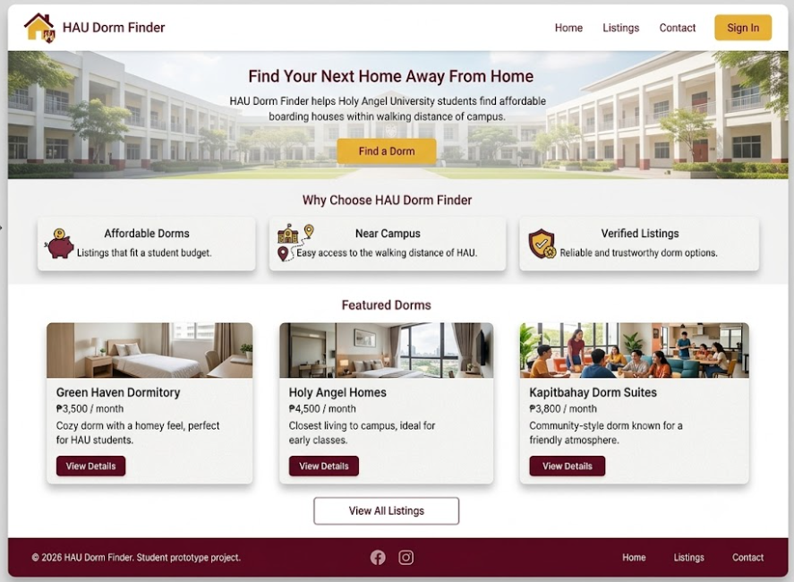
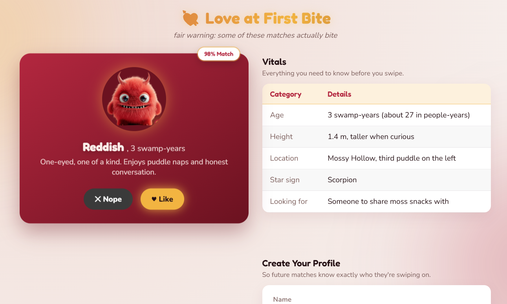
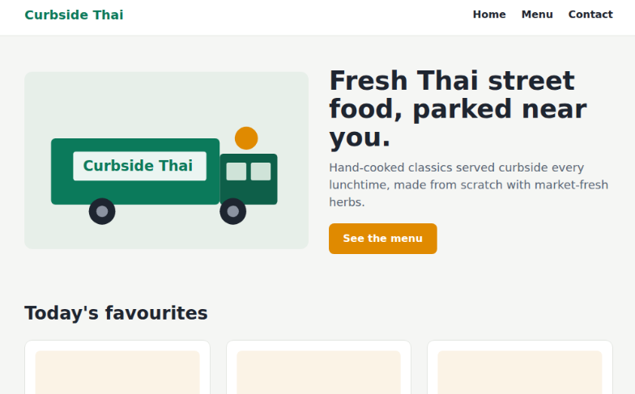
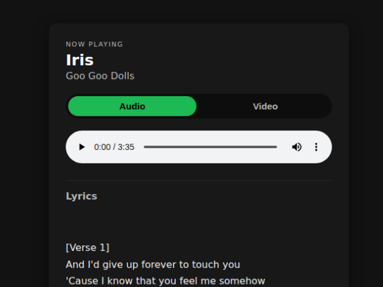

HAU Dorm Finder
A low-fidelity, front-end prototype for finding student housing near campus.
Read project →BSIT · Network Administration · Holy Angel University
Second-year IT student splitting time between config files and CSS files—learning how networks move data and how interfaces make it make sense to people.
yvor@hau-net:~$ whoami
> 2nd-year IT student, Network Admin track
> Holy Angel University — Sec. NW-201
yvor@hau-net:~$ status
> stack........HTML · CSS · JS · Java · Python
> tools........Linux, RHEL, Cisco fundamentals
> focus........networks + interfaces
yvor@hau-net:~$ Selected work

A low-fidelity, front-end prototype for finding student housing near campus.
Read project →
A dating-app-style profile card exploring CSS transitions, forms, and layout.
Read project →
A food-truck site rebuilt to be fully responsive with a CSS-only approach.
Read project →
A browser-based music player inspired by “Iris,” combining lyrics, media, and a small JSON config.
Read project →